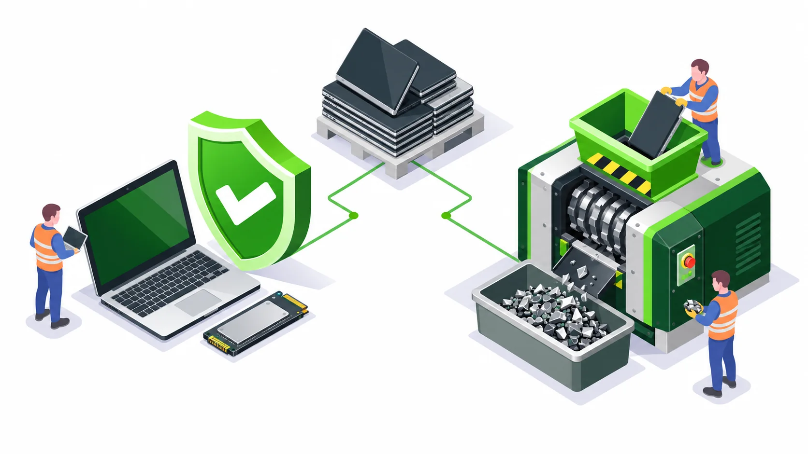

A useful erasure record lets your IT team trace the reported outcome to the exact storage device and retirement approval. Ask for a sample format before buying the service, then agree the fields and exceptions your team must review.
Review these fields before acceptance
| Field | Why your team needs it |
|---|---|
| Asset and media identifiers | Connect a drive result to the equipment register. |
| Tool, version and selected method | Understand the workflow actually used. |
| Processing date and result | Distinguish completed treatment from pending work. |
| Verification and acceptance information | Understand checks and the decision to accept or reject the outcome. |
| Errors, exclusions and failed devices | Keep unresolved media visible. |
| Operator or accountable party and report reference | Provide a route for reconciliation and follow-up. |
Separate the different records
A pickup acknowledgement records a handover. An erasure report records a data treatment outcome. A destruction record describes a different process, while a recycling record addresses the equipment or material route. Agree which documents you need instead of accepting one generic certificate for every step.
BitRaser report and certificate examples illustrates vendor report formats. The availability of an example does not establish what an individual e2e job includes; confirm the deliverables in the quotation.
Treat unsuccessful devices as exceptions
Keep failed, unsupported and unidentifiable media in an open list. Ask how the device is held, who approves a different method and which final record closes it. Reconcile counts as well as identifiers, including devices that were never presented for processing.
NIST SP 800-88 Rev. 2: Guidelines for Media Sanitization distinguishes verification and validation within sanitization assurance. Your review process should identify who accepts the result.
Request the right scope from e2e
When enquiring about data erasure services, state your approved tool, required fields, reporting recipient and storage-media mix. Ask to review a sample report during procurement. Keep your actual records in your own controlled repository; never publish them as marketing material.
Questions from corporate IT teams
Does a certificate alone prove every asset was handled?
It must be reconciled against the agreed inventory and results. Review identifiers, completed outcomes and exceptions rather than relying on the certificate title alone.
Related services and planning guides
Data erasure and sanitization services for corporate IT teams
Data erasure and sanitization for corporate laptops, HDDs, SSDs and servers. Blancco, TruWipe and BitRaser workflows, reporting and Pan-India collection.
Read details ArticleServer decommissioning checklist before recycling or disposal
Plan server retirement after shutdown approval: drive mapping, sanitization, exception handling, equipment collection and recycling records.
Read details
ArticleData erasure or physical drive destruction: which should IT choose?
Compare data wiping, sanitization and physical drive destruction for company laptops, HDDs, SSDs and servers. A practical decision guide for IT buyers.
Read details